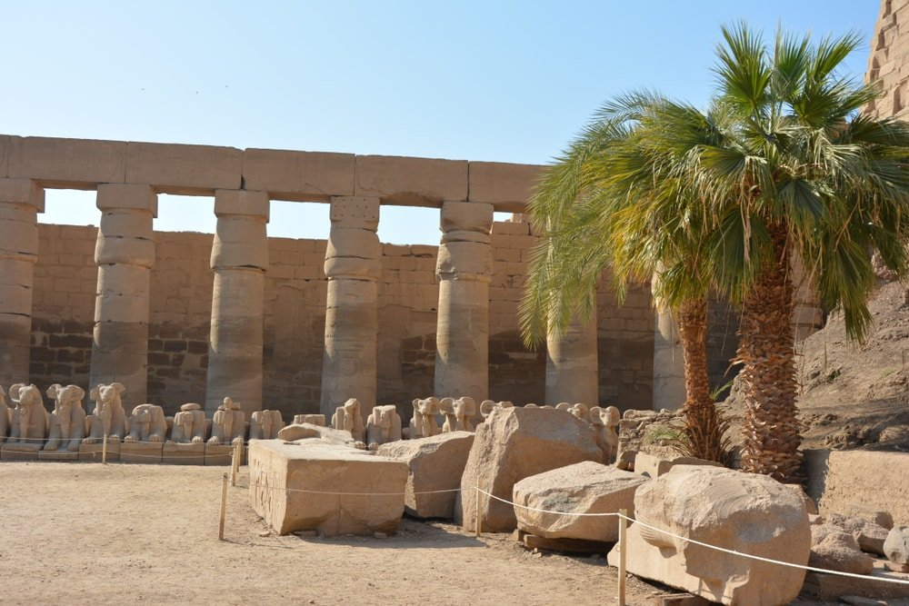
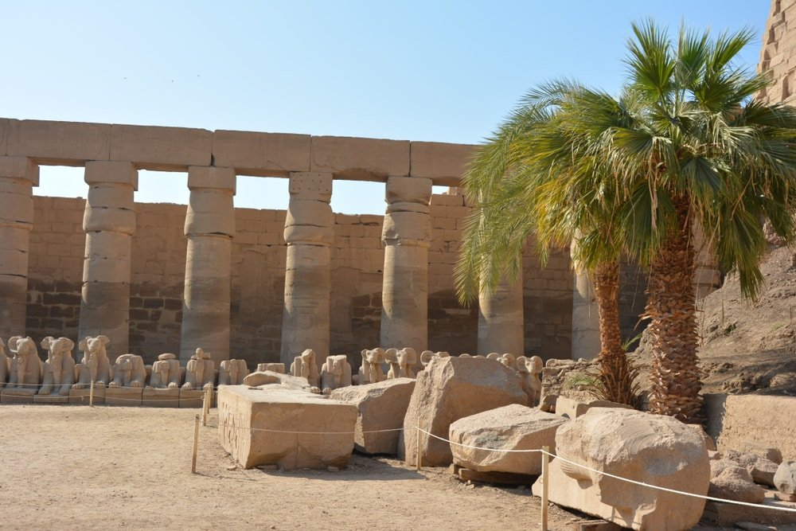

La vallée des Rois
Le musée de Karnak


Fondée sous l’Antiquité, la ville d’Héraklion fut occupée par l’Empire Romain, l’Empire Byantin, les Arabes, les Vénitiens, l’Empire Ottoman, jusqu’à être intégrée dans l’État grec indépendant en 1913. Héraklion est également le premier port crétois, d’où affluent les navires de croisières depuis les Cyclades et Le Pirée d’Athènes. Jalonnée de nombreux sites archéologiques et monuments historiques, Héraklion est encore relativement préservée du tourisme de masse. Les alentours de la ville, entre les montagnes tapissées d’oliviers contrastent avec l’urbanisation incontrôlée du littoral nord.
Visiter Louxor c’est comme ouvrir un livre d’Histoire ! En effet, la ville est riche de nombreux édifices patrimoniaux qui méritant d’être vus. Initié par Aménophis III dans la deuxième moitié du XIVème siècle avant J-C, le temple de Louxor a été complété une centaine d’années après, par Ramsès II. Il était dédié au dieu Amon et, pour lui rendre hommage, la fête d’Opet avait lieu chaque année pendant une dizaine de jours. Il a ensuite subi des modifications, notamment durant la période d’occupation romaine, qui y bâtirent une chapelle. Les musulmans ont ensuite érigé une mosquée, qui est toujours en service de nos jours. Le temple est constitué de plusieurs parties, introduites par la majestueuse allée des sphinx. Après avoir traversé la cour de Necanébo, on entre dans le domaine de Ramsès II par une porte flanquée d’un pylône monumental. La promenade continue dans l’enceinte d’une longue colonnade, qui mène à la cour, puis au sanctuaire d’Aménophis III.
 

Croisière sur le Nil à bord d’une dahabieh, un petit bateau à fond plat typiquement égyptien.
Entre Louxor et Assouan, la vallée du Nil offre aux voyageurs quelques-uns des plus beaux vestiges de l'Égypte antique.les grands navires de croisière doivent s’arrêter aux embarcadères définis, les dahabieh peuvent quant à elles se faufiler vers des sites plus inaccessibles. Ces bateaux typiques à fond plat peuvent accoster où bon leur semble, ponton ou pas ! Sentez-vous ce petit parfum d’interdit ? C’est l’occasion de découvrir, en plus des grands sites incontournables, d’autres merveilles méconnues du temps des pharaons, mais aussi la vie rurale sur les rives du Nil.
Deux visages de l’Égypte, résolument divins.